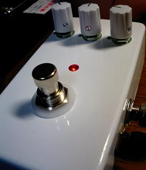

私のエフェクター自作方法【7】完成
2008年11月23日 カテゴリー：私のエフェクター自作方法
ノブやゴム足をつけて完成です。ジャックなどのナットもきちんと締めます。ポットのナットを締めるときはポットが内部で回転しないようにします。

ラベルはそのうち作ります…
エフェクターの自作について解説してあるサイトを紹介します。といっても有名なところですので紹介するまでもないです。
・松美庵さんのサイト
…失敗談など含めいろいろな製作記事があります。私がエフェクター自作を始める際にとてもお世話になりました。
・Wanderlust
…自作教室は今（2008年11月3日現在）改装中のようです。今後の更新に期待しています。
・Bumper crop studio
…半田付けの仕方などかなり細かい解説があります。細かすぎて大雑把な私にはマネできません…
・SHAKE'S BLOG
…エフェクター自作方法としてRATを製作されています。今回自作方法を書くきっかけになりました（同じRATを作ったのはたまたまです）。
他にもたくさんの方がエフェクターを自作されてますので、いろいろ読み漁ればきっとためになると思います。